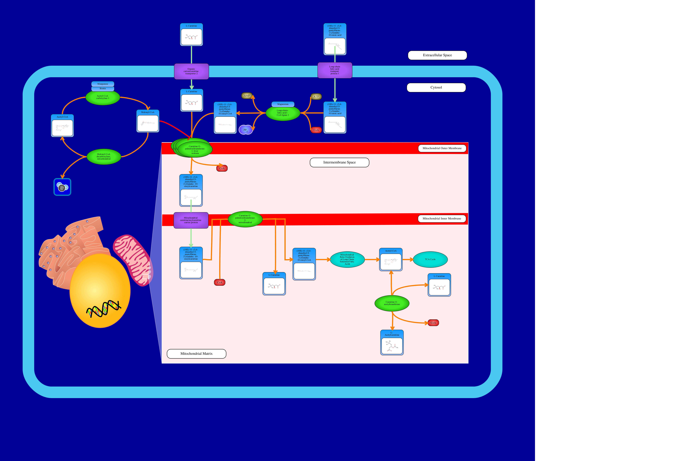

Experience
I've been working as a software developer and computing science researcher since 2017!
Programming languages: full-stack web development (HTML / CSS / JavaScript / Ruby on Rails / Django Python REST framework), SQL (MySQL, SQLite), NoSQL (MongoDB), Java, C++, command-line, Assembly
Knowledge areas: bioinformatics, eduTech, UX/UI research, natural language processing, web scraping, UML, Scrum, Agile, entity-relationship models, spatial databases, relational databases, normalization
Tools: Android Studio, BitBucket, GitHub, Figma, ElasticSearch, Slack/Discord, Jira, Google Cloud Platform, TravisCI, CircleCI, MS Office Suite, Google Suite
Perpetua Labs
- Software Engineering Co-op, Backend Features Team
Sep 2021 - Apr 2022 - WIP
University of Alberta
- Research Assistant, Rafiei Research Group
May 2021 - Aug 2021 - NSERC-awarded Undergraduate researcher in natural language processing (NLP) for extracting document-level relations.
- Researched, developed, and utilized tools for automated annotation of various NLP datasets, including named-entity recognition, relation extraction, and entity linking.
- Created Python programs and MySQL databases to support the project, wrote research report detailing contributions and rationales for future work.
- Research Assistant, Wishart Lab
Sep 2020 - Apr 2021 - Sole Ruby / HTML / SQL developer for web database that allows admins to receive and respond to user feedback on all the lab's web projects.
- Automated thousands biological pathway illustration for acylcarnitines and operons via Ruby on Rails, saving colleagues over 5 hours of work per pathway.
- Wrote research paper, presented work at various stages including a research poster and 3-Minute Thesis.
- High School Intern, Dept. of Computing Science
Jul 2018 - Aug 2018 - Developed interactive STEAM modules for the Alberta high school curriculum using Python / JavaScript / Jupyter Notebooks as part of Cybera Inc.'s Callysto project.
- Presented work at various stages including a research poster.
- High School Intern, Faculty of Science Outreach
Jul 2018 - Aug 2018 - Developed virtual reality JavaScript coding tutorial series for Computing Science Summer Camps
- Conducted UX / UI evaluation for virtual reality company, CoSpaces.
- Demonstrated virtual reality games created and presented research poster.

One of over a thousand acylcarnitine pathways I automated the illustration of. They can help researchers better understand the role of acylcarnitines in various disorders. (Click the image to view and interact with it on PathWhiz.)

Fun fact: This project includes the second driving simulator game I've made. Scroll down to see the first and to find out why my name on this poster is a bit... different. (Click the image to view an enlarged version of this poster.)

Fun fact: I used to go by "Chloe" since everyone I met had difficulty pronouncing and spelling "Jeanne." I've since then embraced my uniqueness! (Click the image to view an enlarged version of this poster.)